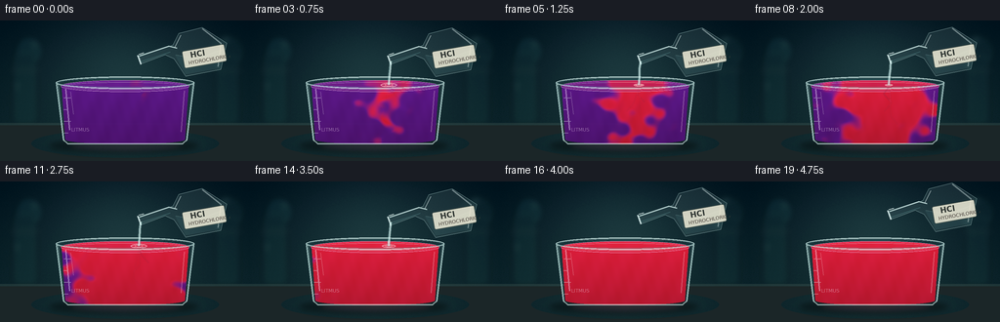
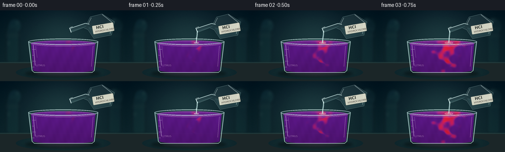

CODING AGENTS AS PIXEL WORLD MODELS
traex/GPT-5.6-Sol · phygen_147
点击播放 · 原生 RGB 像素
逐轮保存的候选
回放视频、检查图与代码变化。
每份候选均可单独播放。实际图片检查记录在下方工具轨迹中。
候选 01播放与检查图
点击播放 · 原生 RGB 像素


展开代码变化
--- 上一保存版本
+++ 本次保存版本
@@ -0,0 +1,244 @@
+from pathlib import Path
+import json, math
+import numpy as np
+from PIL import Image, ImageDraw, ImageFont, ImageFilter
+import artifact_io
+
+CASE_DIR = Path(__file__).resolve().parent
+SPEC = json.loads((CASE_DIR / 'task_spec.json').read_text())
+W, H, N = SPEC['width'], SPEC['height'], SPEC['frames']
+SS = 3
+w, h = W * SS, H * SS
+rng = np.random.default_rng(147)
+
+try:
+ FONT_BOLD = ImageFont.truetype('/usr/share/fonts/truetype/dejavu/DejaVuSans-Bold.ttf', 8 * SS)
+ FONT_SMALL = ImageFont.truetype('/usr/share/fonts/truetype/dejavu/DejaVuSans.ttf', 5 * SS)
+except OSError:
+ FONT_BOLD = FONT_SMALL = ImageFont.load_default()
+
+def sc(v): return int(round(v * SS))
+def pts(seq): return [(sc(x), sc(y)) for x, y in seq]
+def smoothstep(a, b, x):
+ q = np.clip((x-a)/(b-a), 0.0, 1.0)
+ return q*q*(3-2*q)
+
+def rgba_layer(): return Image.new('RGBA', (w, h), (0,0,0,0))
+def ellipse(draw, box, **kw): draw.ellipse(tuple(sc(v) for v in box), **kw)
+def line(draw, xy, **kw): draw.line(pts(xy), **kw)
+
+def make_background():
+ yy, xx = np.mgrid[0:h, 0:w]
+ xn, yn = xx/(w-1), yy/(h-1)
+ # Cool photographic lab backdrop with a soft pool of light behind the glass.
+ top = np.array([12, 30, 39.], float)
+ bottom = np.array([24, 49, 52.], float)
+ arr = top[None,None,:]*(1-yn[:,:,None]) + bottom[None,None,:]*yn[:,:,None]
+ glow = np.exp(-(((xn-.49)/.38)**2 + ((yn-.36)/.55)**2)*2.0)
+ arr += glow[:,:,None]*np.array([15, 22, 20.])
+ vign = np.clip(((xn-.5)/.72)**2 + ((yn-.48)/.9)**2, 0, 1)
+ arr -= vign[:,:,None]*np.array([12,12,10.])
+ noise = rng.normal(0, 1.3, (h,w,1))
+ arr += noise
+ return Image.fromarray(np.uint8(np.clip(arr,0,255)), 'RGB').convert('RGBA')
+
+BACKGROUND = make_background()
+# Static defocused laboratory shapes.
+bg_blur = rgba_layer(); d = ImageDraw.Draw(bg_blur, 'RGBA')
+ellipse(d, (16, 16, 44, 46), fill=(41,112,118,35), outline=(111,210,199,40), width=sc(1))
+ellipse(d, (213, 14, 250, 50), fill=(62,121,113,22), outline=(130,203,186,35), width=sc(1))
+d.rounded_rectangle((sc(13),sc(33),sc(38),sc(106)), radius=sc(5), fill=(30,78,79,46), outline=(115,181,169,35), width=sc(1))
+d.rounded_rectangle((sc(221),sc(36),sc(245),sc(106)), radius=sc(4), fill=(29,71,74,46), outline=(105,178,172,28), width=sc(1))
+# Background shelves and a few bokeh highlights.
+d.rectangle((0,sc(50),w,sc(52)), fill=(113,154,141,18))
+for bx,by,br in [(35,25,2.8),(205,35,2.1),(231,20,3.3),(17,67,2.0),(82,18,1.5)]:
+ ellipse(d, (bx-br,by-br,bx+br,by+br), fill=(168,231,211,38))
+bg_blur = bg_blur.filter(ImageFilter.GaussianBlur(sc(3.0)))
+BACKGROUND = Image.alpha_composite(BACKGROUND, bg_blur)
+# Bench plane.
+bench = rgba_layer(); d = ImageDraw.Draw(bench, 'RGBA')
+d.rectangle((0,sc(105),w,h), fill=(31,42,43,255))
+d.rectangle((0,sc(105),w,sc(107)), fill=(99,116,106,60))
+# warm central reflection on benchtop
+for i in range(24,0,-1):
+ alpha = int(1.0*(25-i))
+ ellipse(d, (128-i*4, 119-i*.30, 128+i*4, 133+i*.30), fill=(102,75,77,alpha))
+BACKGROUND = Image.alpha_composite(BACKGROUND, bench)
+
+# Persistent texture values used for the reaction field.
+yy, xx = np.mgrid[0:h, 0:w]
+X, Y = xx/SS, yy/SS
+
+
+def liquid_layer(frame):
+ """Create litmus liquid with an acid concentration field and glass-constrained mask."""
+ # Timelapse reaction progress; no reaction at frame zero, complete by the final frame.
+ p = (frame - 0.7) / 17.7
+ yn = np.clip((Y - 66.0)/57.0, 0, 1)
+ xnorm = (X - 140.0)/68.0
+ # A descending, curling injected plume; its bent axis and small filaments imply mixing.
+ center = (0.10*np.sin(yn*8.5 + 0.40*frame)
+ + 0.055*np.sin(yn*19.0 - 0.24*frame)
+ - 0.035*yn)
+ dist = np.abs(xnorm - center)
+ curls = (0.052*np.sin(xnorm*10.5 - yn*13.0 + frame*.34)
+ + 0.028*np.sin(xnorm*21.0 + yn*8.0 - frame*.19))
+ arrival = 0.025 + 0.155*yn + 0.56*dist*(0.88 + .12*np.sin(yn*12.0)) + curls
+ c = smoothstep(arrival-.075, arrival+.075, p)
+ # Fast local jet down the centre in early frames.
+ jet_age = np.clip((frame-1)/7.0, 0, 1)
+ jet = np.exp(-((xnorm-center)/(.075+.045*jet_age))**2) * smoothstep(-.08, .13, jet_age-yn*.7)
+ c = np.maximum(c, .72*jet)
+ # Thin interleaved reaction tendrils at the moving boundary.
+ front = np.exp(-((p-arrival)/.10)**2)
+ c = np.clip(c + front*.10*np.sin((X-136)*.33 + Y*.21 - frame*.7), 0, 1)
+ # Complete equilibration at the end.
+ if frame >= 17:
+ c = np.maximum(c, (frame-16)/3.0 * .92)
+ purple = np.array([88., 24., 126.])
+ red = np.array([207., 30., 57.])
+ rgb = purple[None,None,:]*(1-c[:,:,None]) + red[None,None,:]*c[:,:,None]
+ # Bright magenta line at the actual indicator conversion front.
+ boundary = np.exp(-((p-arrival)/.055)**2) * (frame > 0)
+ rgb += boundary[:,:,None] * np.array([18., 4., 20.])
+ # Liquid volume, caustic ripples, and subtle photographic grain.
+ depth = np.clip((Y-63)/63,0,1)
+ rgb *= (1.09 - .20*depth[:,:,None])
+ caustic = 5*np.sin(X*.26 + Y*.12 + frame*.19) + 2*np.sin(X*.63-Y*.18)
+ rgb += caustic[:,:,None] * np.array([.38,.20,.55])
+ # Shape of liquid inside a slightly tapered tumbler.
+ left = 62.8 + 4.0*yn
+ right = 193.2 - 4.0*yn
+ mask = ((Y >= 67) & (Y <= 122.5) & (X >= left) & (X <= right))
+ top_ellipse = (((X-128)/65.2)**2 + ((Y-67)/6.0)**2 <= 1)
+ bottom_ellipse = (((X-128)/61.3)**2 + ((Y-121.7)/5.0)**2 <= 1) & (Y>=120)
+ mask = mask | top_ellipse | bottom_ellipse
+ alpha = np.where(mask, 247, 0).astype(np.uint8)
+ out = np.dstack([np.clip(rgb,0,255).astype(np.uint8), alpha])
+ return Image.fromarray(out, 'RGBA'), c
+
+
+def draw_flask(frame):
+ """A transparent HCl flask at upper right, kept readable while subtly moving."""
+ layer = rgba_layer(); d = ImageDraw.Draw(layer, 'RGBA')
+ # Poised during the pour, then lifted slightly away at the end.
+ lift = max(0, frame-15) * 1.35
+ bob = .45*math.sin(frame*.55)
+ ox, oy = 0.0, -lift+bob
+ # Clear stream comes from this lip.
+ lip = (143+ox, 41+oy)
+ # Erlenmeyer-like flask rotated to pour left. Outer glass silhouette.
+ outer = [(142+ox,36+oy),(145+ox,44+oy),(169+ox,35+oy),(178+ox,39+oy),
+ (190+ox,57+oy),(226+ox,50+oy),(232+ox,23+oy),(207+ox,7+oy),
+ (183+ox,13+oy),(177+ox,25+oy)]
+ d.polygon(pts(outer), fill=(190,224,222,25), outline=(205,242,237,170))
+ # Glass back-edge and neck rings.
+ line(d, [(143+ox,36+oy),(173+ox,26+oy),(181+ox,28+oy)], fill=(228,255,251,195), width=sc(1.2))
+ line(d, [(144+ox,42+oy),(174+ox,32+oy)], fill=(122,186,185,130), width=sc(.8))
+ line(d, [(140.5+ox,35.2+oy),(144+ox,44.5+oy)], fill=(236,255,253,220), width=sc(1.2))
+ line(d, [(142+ox,34.5+oy),(147+ox,33+oy)], fill=(238,255,251,220), width=sc(1))
+ # Colorless hydrochloric acid visible only by a blue-gray meniscus in the bottle.
+ acid_poly = [(179+ox,35+oy),(190+ox,55+oy),(225+ox,49+oy),(229+ox,29+oy),
+ (220+ox,31+oy),(203+ox,39+oy)]
+ d.polygon(pts(acid_poly), fill=(157,213,210,42))
+ line(d, [(180+ox,35+oy),(203+ox,39+oy),(229+ox,29+oy)], fill=(202,244,239,90), width=sc(.8))
+ # Highlights defining the glass volume.
+ line(d, [(207+ox,8+oy),(226+ox,23+oy),(223+ox,47+oy)], fill=(236,255,252,110), width=sc(1.2))
+ line(d, [(185+ox,15+oy),(179+ox,27+oy)], fill=(239,255,253,145), width=sc(1.0))
+ # Label, aligned to the visible body (small rotation preserves the pouring pose).
+ label = Image.new('RGBA',(sc(50),sc(25)),(0,0,0,0)); ld=ImageDraw.Draw(label,'RGBA')
+ ld.rounded_rectangle((sc(2),sc(4),sc(46),sc(22)),radius=sc(2),fill=(231,229,210,225),outline=(80,89,82,165),width=sc(.7))
+ ld.text((sc(10),sc(4.7)),'HCl',font=FONT_BOLD,fill=(49,55,52,255),stroke_width=0)
+ ld.text((sc(7),sc(14.2)),'HYDROCHLORIC ACID',font=FONT_SMALL,fill=(75,63,57,230))
+ label=label.rotate(10,resample=Image.Resampling.BICUBIC,expand=True)
+ layer.alpha_composite(label,(sc(183),sc(19+oy)))
+ return layer, lip
+
+
+def render(frame):
+ im = BACKGROUND.copy()
+ # Contact shadow first.
+ sh = rgba_layer(); ds=ImageDraw.Draw(sh,'RGBA')
+ ellipse(ds,(50,121,203,136),fill=(0,0,0,95))
+ ellipse(ds,(73,124,185,131),fill=(117,47,66,28+frame*2))
+ sh=sh.filter(ImageFilter.GaussianBlur(sc(3.0)))
+ im=Image.alpha_composite(im,sh)
+
+ # Rear glass wall and faint tint.
+ glass_back=rgba_layer(); d=ImageDraw.Draw(glass_back,'RGBA')
+ d.polygon(pts([(58,63),(198,63),(191,124),(65,124)]),fill=(178,223,220,13))
+ line(d,[(59,64),(65,123)],fill=(196,239,234,75),width=sc(1.2))
+ line(d,[(197,64),(191,123)],fill=(196,239,234,65),width=sc(1.2))
+ im=Image.alpha_composite(im,glass_back)
+
+ liquid, concentration = liquid_layer(frame)
+ im=Image.alpha_composite(im,liquid)
+
+ # Surface sheen, turbulence, glass outlines, graduation marks.
+ detail=rgba_layer(); d=ImageDraw.Draw(detail,'RGBA')
+ # liquid surface ellipse; color stays physically tied to the indicator beneath it
+ surf_c = float(np.clip((frame-.7)/12.5,0,1))
+ surf_col = tuple(int(a*(1-surf_c)+b*surf_c) for a,b in zip((119,42,151),(226,46,73)))
+ ellipse(d,(62,61,194,73),fill=surf_col+(95,),outline=(235,187,230,125),width=sc(.8))
+ ellipse(d,(65,63,191,71),outline=(246,218,238,85),width=sc(.7))
+ # Impact rings while pouring.
+ if 1 <= frame <= 15:
+ r = 4.0 + (frame%4)*1.45
+ ellipse(d,(142-r,66-r*.23,142+r,66+r*.23),outline=(252,219,229,155),width=sc(.85))
+ ellipse(d,(142-r*.52,66-r*.12,142+r*.52,66+r*.12),outline=(255,241,244,120),width=sc(.7))
+ # Beaker rim and walls.
+ ellipse(d,(57,57.5,199,70),outline=(218,245,241,185),width=sc(1.25))
+ ellipse(d,(59.5,59.2,196.5,68.4),outline=(97,149,154,120),width=sc(.75))
+ line(d,[(57.5,63.5),(64.5,122),(69,126),(187,126),(191.5,122),(198.5,63.5)],fill=(205,240,236,180),width=sc(1.25))
+ line(d,[(64.5,122),(69,126),(187,126),(191.5,122)],fill=(229,250,246,150),width=sc(1.0))
+ # Strong vertical highlights and refracted edges.
+ line(d,[(67,70),(71,112)],fill=(245,239,255,108),width=sc(1.25))
+ line(d,[(72,73),(75,96)],fill=(255,255,255,60),width=sc(.8))
+ line(d,[(188.5,72),(185.5,114)],fill=(255,230,239,72),width=sc(1.0))
+ # Graduations on the left.
+ for j,yy0 in enumerate([79,91,103,115]):
+ length=7 if j%2==0 else 4.5
+ line(d,[(65.2,yy0),(65.2+length,yy0)],fill=(226,239,235,110),width=sc(.65))
+ d.text((sc(73),sc(109)),'LITMUS',font=FONT_SMALL,fill=(245,224,240,105))
+ im=Image.alpha_composite(im,detail)
+
+ flask, lip = draw_flask(frame)
+ im=Image.alpha_composite(im,flask)
+
+ # Stream overlays both flask and glass: clear acid catches cool highlights.
+ if 1 <= frame <= 15:
+ stream=rgba_layer(); d=ImageDraw.Draw(stream,'RGBA')
+ x0,y0=lip
+ # narrow coherent gravity-driven stream with a tiny timelapse shimmer
+ bend=.55*math.sin(frame*.9)
+ path=[(x0+1,y0),(143.2+bend,49),(142.5-bend*.3,58),(142.0,66)]
+ line(d,path,fill=(173,226,224,130),width=sc(3.1))
+ line(d,[(x+.15,y) for x,y in path],fill=(242,255,252,215),width=sc(.9))
+ # droplets near start/end of pour make motion obvious without implying bubbling
+ if frame in (1,2,14,15):
+ dy=52+(frame%3)*5
+ ellipse(d,(140.8,dy-2,143.5,dy+2),fill=(220,250,247,190))
+ stream=stream.filter(ImageFilter.GaussianBlur(sc(.22)))
+ im=Image.alpha_composite(im,stream)
+
+ # Tiny localized mixing streaks at the jet, visible in middle reaction frames.
+ if 3 <= frame <= 13:
+ sw=rgba_layer(); d=ImageDraw.Draw(sw,'RGBA')
+ alpha=int(120*(1-abs(frame-8)/8))
+ for k in range(3):
+ y0=73+k*12+((frame+k)%3)
+ x0=141+math.sin(frame*.65+k*1.8)*5
+ line(d,[(142,68),(x0,y0),(x0+(-1)**k*7,y0+8)],fill=(241,71,119,alpha//(k+1)),width=sc(.65))
+ sw=sw.filter(ImageFilter.GaussianBlur(sc(.45)))
+ im=Image.alpha_composite(im,sw)
+
+ # Controlled final contrast and downsample for clean anti-aliasing.
+ rgb=im.convert('RGB').resize((W,H),Image.Resampling.LANCZOS)
+ arr=np.asarray(rgb).astype(np.float32)
+ arr=(arr-128)*1.035+128
+ return np.uint8(np.clip(arr,0,255))
+
+frames=np.stack([render(i) for i in range(N)],axis=0)
+assert frames.shape==(N,H,W,3) and frames.dtype==np.uint8
+artifact_io.save(frames,CASE_DIR)
+print(f'Saved {N} RGB frames at {W}x{H}; range={frames.min()}..{frames.max()}')
可观测工具轨迹
实际执行的命令与返回图片。
命令 1exit 0
/bin/bash -lc "cat prompt.txt && printf '\\n--- GENERATION_RULES.md ---\\n' && cat GENERATION_RULES.md && printf '\\n--- task_spec.json ---\\n' && cat task_spec.json"
命令 2exit 0
/bin/bash -lc "printf '%s\\n' '--- files ---'; find . -maxdepth 3 -type f -printf '%p\\n' | sort; printf '%s\\n' '--- tools ---'; command -v ffmpeg || true; command -v blender || true; command -v python3 || true; python3 - <<'PY' mods=['numpy','PIL','cv2','moviepy','imageio','moderngl','pygame'] for m in mods: try: x=__import__(m); print(m,'OK',getattr(x,'__version__','')) except Exception as e: print(m,'NO',type(e).__name__) PY"
命令 3exit 0
/bin/bash -lc 'cat artifact_io.py'
命令 4exit 0
/bin/bash -lc "cat > generate.py <<'PY'
from pathlib import Path
import json, math
import numpy as np
from PIL import Image, ImageDraw, ImageFont, ImageFilter
import artifact_io
CASE_DIR = Path(__file__).resolve().parent
SPEC = json.loads((CASE_DIR / 'task_spec.json').read_text())
W, H, N = SPEC['width'], SPEC['height'], SPEC['frames']
SS = 3
w, h = W * SS, H * SS
rng = np.random.default_rng(147)
try:
FONT_BOLD = ImageFont.truetype('/usr/share/fonts/truetype/dejavu/DejaVuSans-Bold.ttf', 8 * SS)
FONT_SMALL = ImageFont.truetype('/usr/share/fonts/truetype/dejavu/DejaVuSans.ttf', 5 * SS)
except OSError:
FONT_BOLD = FONT_SMALL = ImageFont.load_default()
def sc(v): return int(round(v * SS))
def pts(seq): return [(sc(x), sc(y)) for x, y in seq]
def smoothstep(a, b, x):
q = np.clip((x-a)/(b-a), 0.0, 1.0)
return q*q*(3-2*q)
def rgba_layer(): return Image.new('RGBA', (w, h), (0,0,0,0))
def ellipse(draw, box, **kw): draw.ellipse(tuple(sc(v) for v in box), **kw)
def line(draw, xy, **kw): draw.line(pts(xy), **kw)
def make_background():
yy, xx = np.mgrid[0:h, 0:w]
xn, yn = xx/(w-1), yy/(h-1)
# Cool photographic lab backdrop with a soft pool of light behind the glass.
top = np.array([12, 30, 39.], float)
bottom = np.array([24, 49, 52.], float)
arr = top[None,None,:]*(1-yn[:,:,None]) + bottom[None,None,:]*yn[:,:,None]
glow = np.exp(-(((xn-.49)/.38)**2 + ((yn-.36)/.55)**2)*2.0)
arr += glow[:,:,None]*np.array([15, 22, 20.])
vign = np.clip(((xn-.5)/.72)**2 + ((yn-.48)/.9)**2, 0, 1)
arr -= vign[:,:,None]*np.array([12,12,10.])
noise = rng.normal(0, 1.3, (h,w,1))
arr += noise
return Image.fromarray(np.uint8(np.clip(arr,0,255)), 'RGB').convert('RGBA')
BACKGROUND = make_background()
# Static defocused laboratory shapes.
bg_blur = rgba_layer(); d = ImageDraw.Draw(bg_blur, 'RGBA')
ellipse(d, (16, 16, 44, 46), fill=(41,112,118,35), outline=(111,210,199,40), width=sc(1))
ellipse(d, (213, 14, 250, 50), fill=(62,121,113,22), outline=(130,203,186,35), width=sc(1))
d.rounded_rectangle((sc(13),sc(33),sc(38),sc(106)), radius=sc(5), fill=(30,78,79,46), outline=(115,181,169,35), width=sc(1))
d.rounded_rectangle((sc(221),sc(36),sc(245),sc(106)), radius=sc(4), fill=(29,71,74,46), outline=(105,178,172,28), width=sc(1))
# Background shelves and a few bokeh highlights.
d.rectangle((0,sc(50),w,sc(52)), fill=(113,154,141,18))
for bx,by,br in [(35,25,2.8),(205,35,2.1),(231,20,3.3),(17,67,2.0),(82,18,1.5)]:
ellipse(d, (bx-br,by-br,bx+br,by+br), fill=(168,231,211,38))
bg_blur = bg_blur.filter(ImageFilter.GaussianBlur(sc(3.0)))
BACKGROUND = Image.alpha_composite(BACKGROUND, bg_blur)
# Bench plane.
bench = rgba_layer(); d = ImageDraw.Draw(bench, 'RGBA')
d.rectangle((0,sc(105),w,h), fill=(31,42,43,255))
d.rectangle((0,sc(105),w,sc(107)), fill=(99,116,106,60))
# warm central reflection on benchtop
for i in range(24,0,-1):
alpha = int(1.0*(25-i))
ellipse(d, (128-i*4, 119-i*.30, 128+i*4, 133+i*.30), fill=(102,75,77,alpha))
BACKGROUND = Image.alpha_composite(BACKGROUND, bench)
# Persistent texture values used for the reaction field.
yy, xx = np.mgrid[0:h, 0:w]
X, Y = xx/SS, yy/SS
def liquid_layer(frame):
\"\"\"Create litmus liquid with an acid concentration field and glass-constrained mask.\"\"\"
# Timelapse reaction progress; no reaction at frame zero, complete by the final frame.
p = (frame - 0.7) / 17.7
yn = np.clip((Y - 66.0)/57.0, 0, 1)
xnorm = (X - 140.0)/68.0
# A descending, curling injected plume; its bent axis and small filaments imply mixing.
center = (0.10*np.sin(yn*8.5 + 0.40*frame)
+ 0.055*np.sin(yn*19.0 - 0.24*frame)
- 0.035*yn)
dist = np.abs(xnorm - center)
curls = (0.052*np.sin(xnorm*10.5 - yn*13.0 + frame*.34)
+ 0.028*np.sin(xnorm*21.0 + yn*8.0 - frame*.19))
arrival = 0.025 + 0.155*yn + 0.56*dist*(0.88 + .12*np.sin(yn*12.0)) + curls
c = smoothstep(arrival-.075, arrival+.075, p)
# Fast local jet down the centre in early frames.
jet_age = np.clip((frame-1)/7.0, 0, 1)
jet = np.exp(-((xnorm-center)/(.075+.045*jet_age))**2) * smoothstep(-.08, .13, jet_age-yn*.7)
c = np.maximum(c, .72*jet)
# Thin interleaved reaction tendrils at the moving boundary.
front = np.exp(-((p-arrival)/.10)**2)
c = np.clip(c + front*.10*np.sin((X-136)*.33 + Y*.21 - frame*.7), 0, 1)
# Complete equilibration at the end.
if frame >= 17:
c = np.maximum(c, (frame-16)/3.0 * .92)
purple = np.array([88., 24., 126.])
red = np.array([207., 30., 57.])
rgb = purple[None,None,:]*(1-c[:,:,None]) + red[None,None,:]*c[:,:,None]
# Bright magenta line at the actual indicator conversion front.
boundary = np.exp(-((p-arrival)/.055)**2) * (frame > 0)
rgb += boundary[:,:,None] * np.array([18., 4., 20.])
# Liquid volume, caustic ripples, and subtle photographic grain.
depth = np.clip((Y-63)/63,0,1)
rgb *= (1.09 - .20*depth[:,:,None])
caustic = 5*np.sin(X*.26 + Y*.12 + frame*.19) + 2*np.sin(X*.63-Y*.18)
rgb += caustic[:,:,None] * np.array([.38,.20,.55])
# Shape of liquid inside a slightly tapered tumbler.
left = 62.8 + 4.0*yn
right = 193.2 - 4.0*yn
mask = ((Y >= 67) & (Y <= 122.5) & (X >= left) & (X <= right))
top_ellipse = (((X-128)/65.2)**2 + ((Y-67)/6.0)**2 <= 1)
bottom_ellipse = (((X-128)/61.3)**2 + ((Y-121.7)/5.0)**2 <= 1) & (Y>=120)
mask = mask | top_ellipse | bottom_ellipse
alpha = np.where(mask, 247, 0).astype(np.uint8)
out = np.dstack([np.clip(rgb,0,255).astype(np.uint8), alpha])
return Image.fromarray(out, 'RGBA'), c
def draw_flask(frame):
\"\"\"A transparent HCl flask at upper right, kept readable while subtly moving.\"\"\"
layer = rgba_layer(); d = ImageDraw.Draw(layer, 'RGBA')
# Poised during the pour, then lifted slightly away at the end.
lift = max(0, frame-15) * 1.35
bob = .45*math.sin(frame*.55)
ox, oy = 0.0, -lift+bob
# Clear stream comes from this lip.
lip = (143+ox, 41+oy)
# Erlenmeyer-like flask rotated to pour left. Outer glass silhouette.
outer = [(142+ox,36+oy),(145+ox,44+oy),(169+ox,35+oy),(178+ox,39+oy),
(190+ox,57+oy),(226+ox,50+oy),(232+ox,23+oy),(207+ox,7+oy),
(183+ox,13+oy),(177+ox,25+oy)]
d.polygon(pts(outer), fill=(190,224,222,25), outline=(205,242,237,170))
# Glass back-edge and neck rings.
line(d, [(143+ox,36+oy),(173+ox,26+oy),(181+ox,28+oy)], fill=(228,255,251,195), width=sc(1.2))
line(d, [(144+ox,42+oy),(174+ox,32+oy)], fill=(122,186,185,130), width=sc(.8))
line(d, [(140.5+ox,35.2+oy),(144+ox,44.5+oy)], fill=(236,255,253,220), width=sc(1.2))
line(d, [(142+ox,34.5+oy),(147+ox,33+oy)], fill=(238,255,251,220), width=sc(1))
# Colorless hydrochloric acid visible only by a blue-gray meniscus in the bottle.
acid_poly = [(179+ox,35+oy),(190+ox,55+oy),(225+ox,49+oy),(229+ox,29+oy),
(220+ox,31+oy),(203+ox,39+oy)]
d.polygon(pts(acid_poly), fill=(157,213,210,42))
line(d, [(180+ox,35+oy),(203+ox,39+oy),(229+ox,29+oy)], fill=(202,244,239,90), width=sc(.8))
# Highlights defining the glass volume.
line(d, [(207+ox,8+oy),(226+ox,23+oy),(223+ox,47+oy)], fill=(236,255,252,110), width=sc(1.2))
line(d, [(185+ox,15+oy),(179+ox,27+oy)], fill=(239,255,253,145), width=sc(1.0))
# Label, aligned to the visible body (small rotation preserves the pouring pose).
label = Image.new('RGBA',(sc(50),sc(25)),(0,0,0,0)); ld=ImageDraw.Draw(label,'RGBA')
ld.rounded_rectangle((sc(2),sc(4),sc(46),sc(22)),radius=sc(2),fill=(231,229,210,225),outline=(80,89,82,165),width=sc(.7))
ld.text((sc(10),sc(4.7)),'HCl',font=FONT_BOLD,fill=(49,55,52,255),stroke_width=0)
ld.text((sc(7),sc(14.2)),'HYDROCHLORIC ACID',font=FONT_SMALL,fill=(75,63,57,230))
label=label.rotate(10,resample=Image.Resampling.BICUBIC,expand=True)
layer.alpha_composite(label,(sc(183),sc(19+oy)))
return layer, lip
def render(frame):
im = BACKGROUND.copy()
# Contact shadow first.
sh = rgba_layer(); ds=ImageDraw.Draw(sh,'RGBA')
ellipse(ds,(50,121,203,136),fill=(0,0,0,95))
ellipse(ds,(73,124,185,131),fill=(117,47,66,28+frame*2))
sh=sh.filter(ImageFilter.GaussianBlur(sc(3.0)))
im=Image.alpha_composite(im,sh)
# Rear glass wall and faint tint.
glass_back=rgba_layer(); d=ImageDraw.Draw(glass_back,'RGBA')
d.polygon(pts([(58,63),(198,63),(191,124),(65,124)]),fill=(178,223,220,13))
line(d,[(59,64),(65,123)],fill=(196,239,234,75),width=sc(1.2))
line(d,[(197,64),(191,123)],fill=(196,239,234,65),width=sc(1.2))
im=Image.alpha_composite(im,glass_back)
liquid, concentration = liquid_layer(frame)
im=Image.alpha_composite(im,liquid)
# Surface sheen, turbulence, glass outlines, graduation marks.
detail=rgba_layer(); d=ImageDraw.Draw(detail,'RGBA')
# liquid surface ellipse; color stays physically tied to the indicator beneath it
surf_c = float(np.clip((frame-.7)/12.5,0,1))
surf_col = tuple(int(a*(1-surf_c)+b*surf_c) for a,b in zip((119,42,151),(226,46,73)))
ellipse(d,(62,61,194,73),fill=surf_col+(95,),outline=(235,187,230,125),width=sc(.8))
ellipse(d,(65,63,191,71),outline=(246,218,238,85),width=sc(.7))
# Impact rings while pouring.
if 1 <= frame <= 15:
r = 4.0 + (frame%4)*1.45
ellipse(d,(142-r,66-r*.23,142+r,66+r*.23),outline=(252,219,229,155),width=sc(.85))
ellipse(d,(142-r*.52,66-r*.12,142+r*.52,66+r*.12),outline=(255,241,244,120),width=sc(.7))
# Beaker rim and walls.
ellipse(d,(57,57.5,199,70),outline=(218,245,241,185),width=sc(1.25))
ellipse(d,(59.5,59.2,196.5,68.4),outline=(97,149,154,120),width=sc(.75))
line(d,[(57.5,63.5),(64.5,122),(69,126),(187,126),(191.5,122),(198.5,63.5)],fill=(205,240,236,180),width=sc(1.25))
line(d,[(64.5,122),(69,126),(187,126),(191.5,122)],fill=(229,250,246,150),width=sc(1.0))
# Strong vertical highlights and refracted edges.
line(d,[(67,70),(71,112)],fill=(245,239,255,108),width=sc(1.25))
line(d,[(72,73),(75,96)],fill=(255,255,255,60),width=sc(.8))
line(d,[(188.5,72),(185.5,114)],fill=(255,230,239,72),width=sc(1.0))
# Graduations on the left.
for j,yy0 in enumerate([79,91,103,115]):
length=7 if j%2==0 else 4.5
line(d,[(65.2,yy0),(65.2+length,yy0)],fill=(226,239,235,110),width=sc(.65))
d.text((sc(73),sc(109)),'LITMUS',font=FONT_SMALL,fill=(245,224,240,105))
im=Image.alpha_composite(im,detail)
flask, lip = draw_flask(frame)
im=Image.alpha_composite(im,flask)
# Stream overlays both flask and glass: clear acid catches cool highlights.
if 1 <= frame <= 15:
stream=rgba_layer(); d=ImageDraw.Draw(stream,'RGBA')
x0,y0=lip
# narrow coherent gravity-driven stream with a tiny timelapse shimmer
bend=.55*math.sin(frame*.9)
path=[(x0+1,y0),(143.2+bend,49),(142.5-bend*.3,58),(142.0,66)]
line(d,path,fill=(173,226,224,130),width=sc(3.1))
line(d,[(x+.15,y) for x,y in path],fill=(242,255,252,215),width=sc(.9))
# droplets near start/end of pour make motion obvious without implying bubbling
if frame in (1,2,14,15):
dy=52+(frame%3)*5
ellipse(d,(140.8,dy-2,143.5,dy+2),fill=(220,250,247,190))
stream=stream.filter(ImageFilter.GaussianBlur(sc(.22)))
im=Image.alpha_composite(im,stream)
# Tiny localized mixing streaks at the jet, visible in middle reaction frames.
if 3 <= frame <= 13:
sw=rgba_layer(); d=ImageDraw.Draw(sw,'RGBA')
alpha=int(120*(1-abs(frame-8)/8))
for k in range(3):
y0=73+k*12+((frame+k)%3)
x0=141+math.sin(frame*.65+k*1.8)*5
line(d,[(142,68),(x0,y0),(x0+(-1)**k*7,y0+8)],fill=(241,71,119,alpha//(k+1)),width=sc(.65))
sw=sw.filter(ImageFilter.GaussianBlur(sc(.45)))
im=Image.alpha_composite(im,sw)
# Controlled final contrast and downsample for clean anti-aliasing.
rgb=im.convert('RGB').resize((W,H),Image.Resampling.LANCZOS)
arr=np.asarray(rgb).astype(np.float32)
arr=(arr-128)*1.035+128
return np.uint8(np.clip(arr,0,255))
frames=np.stack([render(i) for i in range(N)],axis=0)
assert frames.shape==(N,H,W,3) and frames.dtype==np.uint8
artifact_io.save(frames,CASE_DIR)
print(f'Saved {N} RGB frames at {W}x{H}; range={frames.min()}..{frames.max()}')
PY
python3 generate.py"命令 5exit 0
/bin/bash -lc "python3 - <<'PY'
from PIL import Image
import numpy as np, json
ims=np.stack([np.array(Image.open(f'frames/{i:02d}.png').convert('RGB')) for i in range(20)])
print('frames',ims.shape,ims.dtype)
# central liquid ROI avoids highlights/glass edge
roi=ims[:,75:116,83:175]
for i in [0,1,3,6,9,12,15,17,19]:
m=roi[i].mean((0,1)); print(i, 'mean RGB', np.round(m,1), 'red dominance',round(float(m[0]-m[2]),1))
print('MAD consecutive:',np.round(np.abs(np.diff(ims.astype(float),axis=0)).mean((1,2,3)),2))
print('files',[(p, __import__('pathlib').Path(p).stat().st_size) for p in ['pixels.npz','index.html','inspection.png','transition_check.png']])
z=np.load('pixels.npz')['pixels']; print('npz',z.shape,z.dtype,'range',hex(int(z.min())),hex(int(z.max())))
PY"命令 6exit 0
/bin/bash -lc "python3 - <<'PY'
# Coarse ANSI-free luminance/color diagnostic for selected frames.
from PIL import Image
import numpy as np
chars=' .:-=+*#%@'
for idx in [0,6,12,19]:
a=np.array(Image.open(f'frames/{idx:02d}.png').resize((64,36))).astype(float)
lum=a@np.array([.2126,.7152,.0722])
print('\\nFRAME',idx)
for row in lum[::2]: print(''.join(chars[min(9,int(v/256*10))] for v in row))
PY"保存候选 1 份；完成命令 6 次；可验证图片返回 0 张。原始 API 响应与完整日志保留在本地。